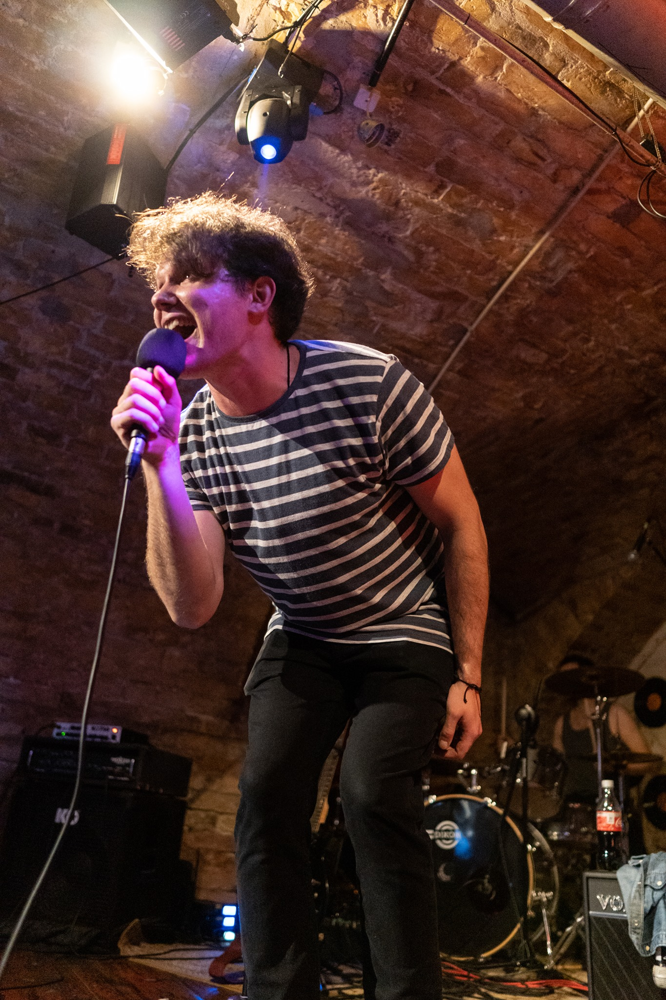
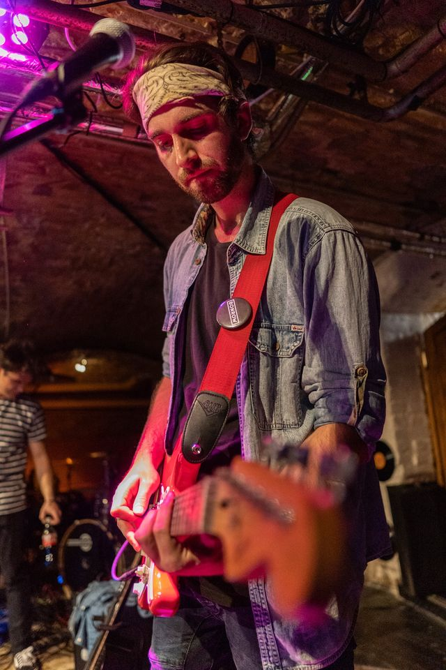
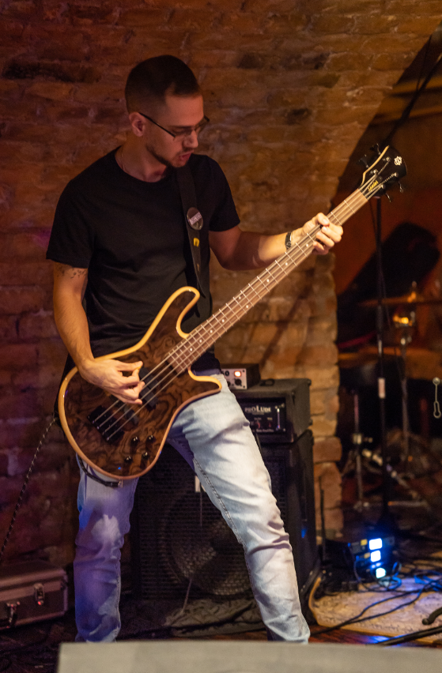
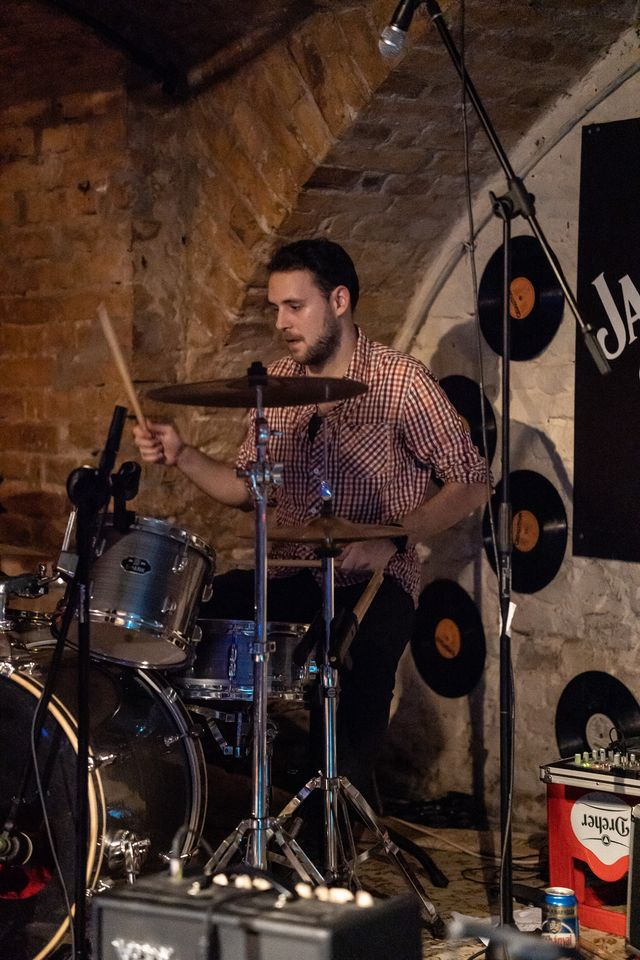

Balázs 
Az emberek gyakran úgy gondolják, hogy antiszoc vagyok és depressziós, ezért elkezdtem dalokat írni, hogy igazat adjak nekik az előbbiekkel kapcsolatban. Elsőként 10 évesen vettem hangszert a kezembe, majd azon a napon megírtam az Oasis – Wonderwall című számát magyar szöveggel, egy akkordra hangszerelve. Ennek az lett a vége, hogy szüleim inkább beírattak egy zeneiskolába. Mára messzebb jutottam, mint bárki hitte volna, hiszen négy akkordos számokat is simán meg tudok írni.
Peti 
'96-ban láttam meg a napvilágot egy szép májusi reggelen, amikor az angyalok dalolták a Sultans of swinget. A 80-as és 90-es évek rock zenéi voltak azok a számok amik meghatározták az ízlésemet.Komolyabban, zenekari szinten 2017-ben kezdtem el gitározni. Instrumentális tudásomra annyit mondanék, hogy 3,6 (Nem jó, de nem is tragikus)
Feri 
Annó haverokkal alapítottunk egy együttest de nem voltak vele komolyabb szándékaink. Ezután játszottam egy orosházi zenekarban 3 évig, ami egy progresszív folk rock zenekar volt. Instrumentális vonalon is mozogtam egy ideig, valamint a pop rock stílusban is kipróbáltam magam. Ezt szeretném itt is tovább vinni.
Bogdán 
Több rockbandában voltam alapító és dobos. Illetve több metál bandában basszusgitároztam és volt pár sindwing project is, ahol basszeroztam vagy énekeltem. Pop, rock és punk ötvözését szeretem leginkább a zenében. Kedvenceim a 90-es évek alterrock szerzeményi.